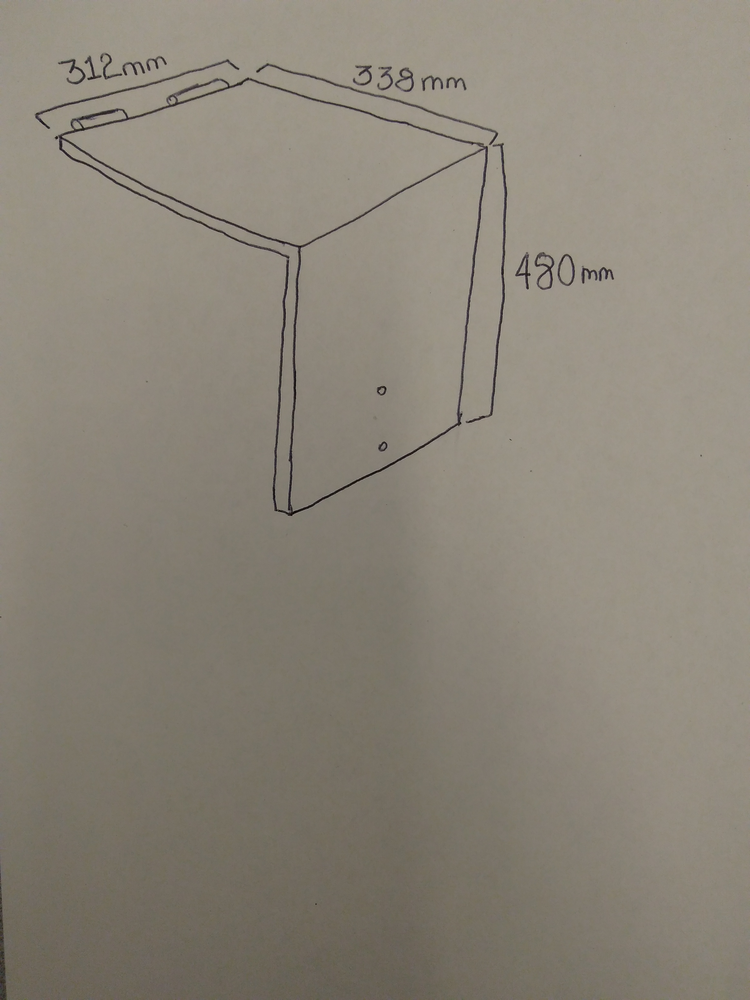
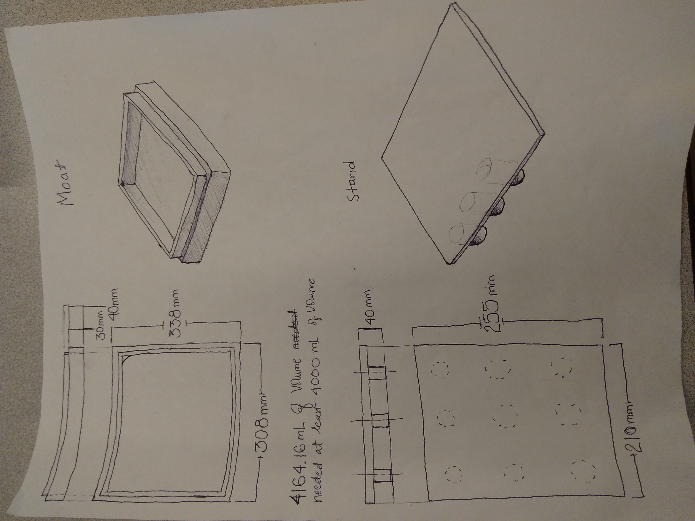
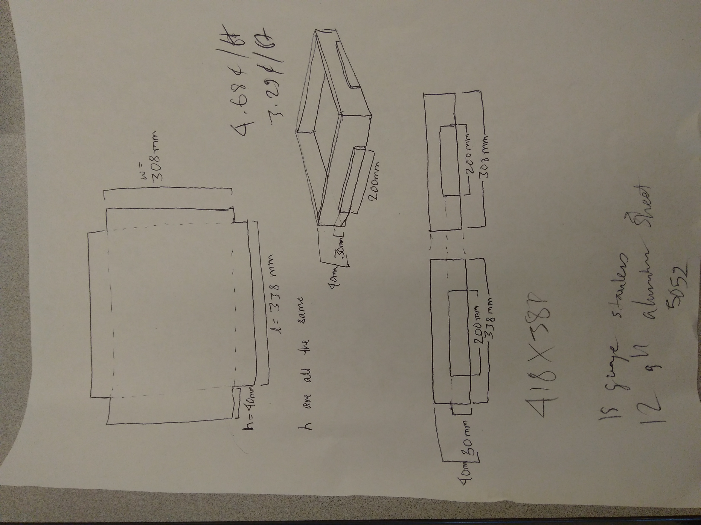
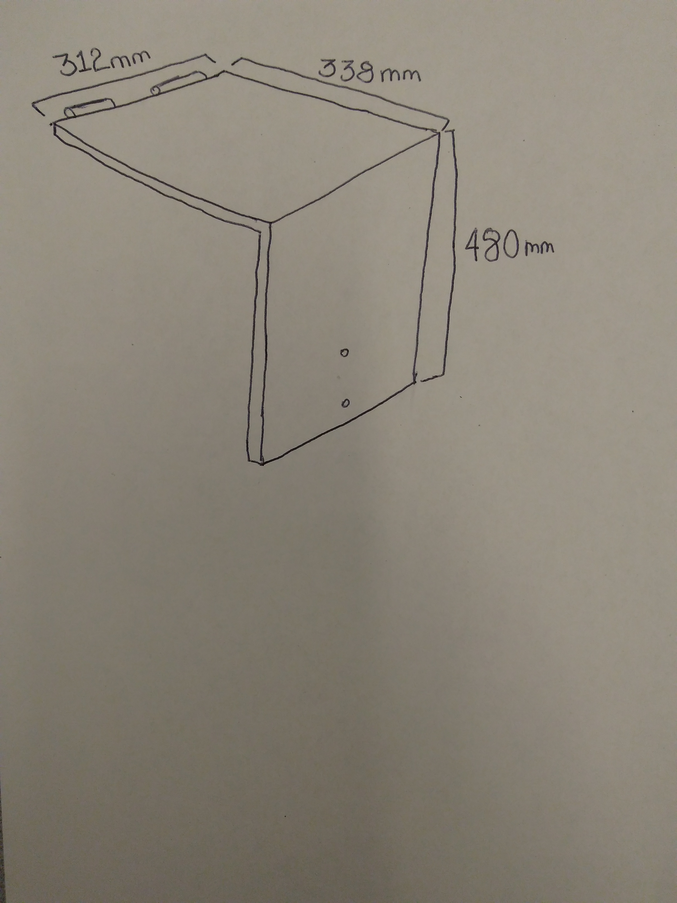
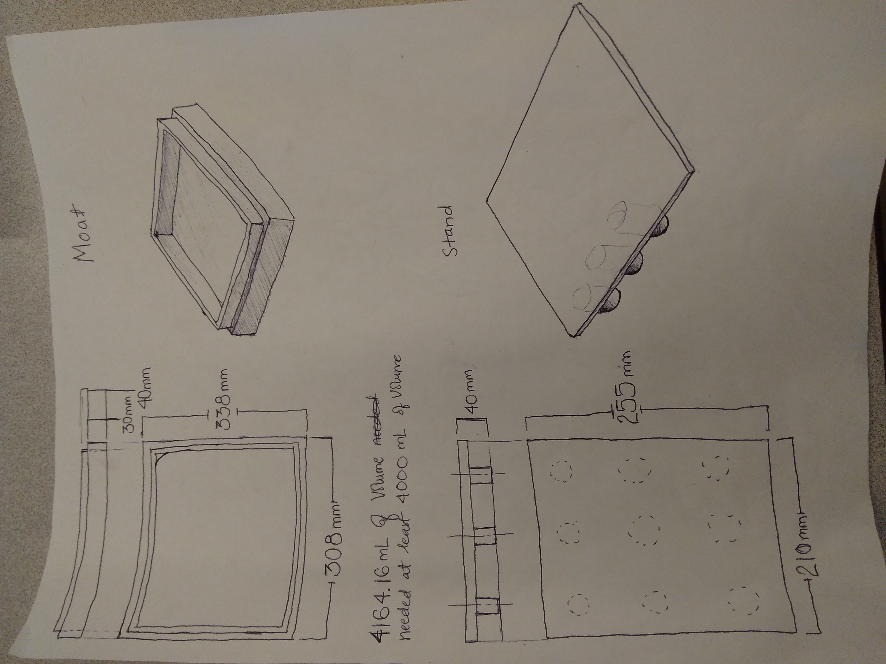
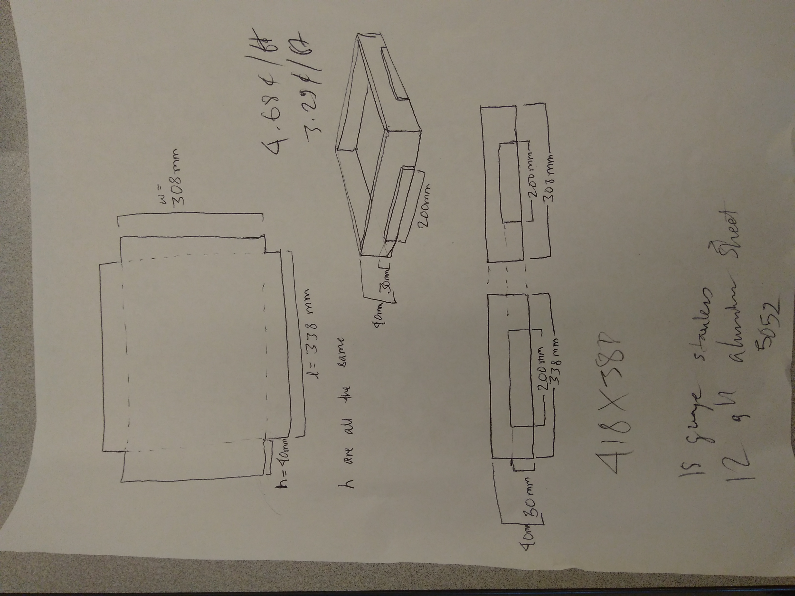
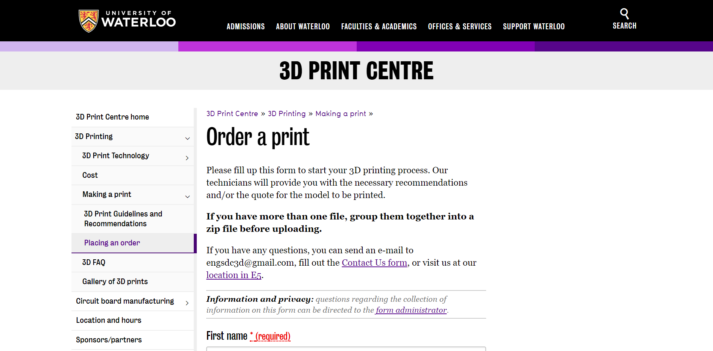

Projects
-
MATLab numerical analysis of 2D heat equation;3B study term
 The bottom base of the design with all the gears and the motors.
The bottom base of the design with all the gears and the motors.- I was assigned a heat transfer project to study how fins can help cool down a part. The part here has the left side heated to a constant temperature. While the other surface is subject to convection. Also, the fin does not cover the entirity of the part when in use. So, the corners have to be taken into consideration as well. The environment was considered to be at 20 deg C. Radiation was not taken into consideration.
- Firstly, I divided the part and the possible fin into different regions. Then, I derived the equations for each region. I decided to use symmetry of the geometry to my advantage and only calculated the values once. The number of nodes was left as an arbitrary value dependent on the spatial step size.
- Then, the numerical analysis was implemented on MATLab with vectorization because it was thought to be as more efficient method.
- Four studies were done; study without a fin, with a fin and steady state with a corrective addiabatic tip, with a fin and steady state without a corrective addiabatic tip and, with a fin and unsteady state without a corrective addiabatic tip. The last one with the unsteady state is the most accurate but the difference between it and the steady state with corrective tip isnt high. Also, I decided that the fin wasn't that good because the surface of the part didnt decrease that much in temperature.
- Could have made it more realistic by making it 3D and also including radiation.
-
Stewart Platform;3B study term
 The bottom base of the design with all the gears and the motors.
The bottom base of the design with all the gears and the motors. CAD of final design of the stewart platform.
CAD of final design of the stewart platform. Fabricated bottom base without the motors.
Fabricated bottom base without the motors. Final mechanical design.
Final mechanical design. Final design with a 5 kg load.
Final design with a 5 kg load.- We were given a Stewart Platform which had to solve a marble maze placed on top of it.
- We had two design objectives. Maximise Repeatability: Maximise the number of times the maze can be solved auto-matically. Maximise Structural Strength: Maximise the structural strength of the model.
- I was responsible for the designing and fabrication of the parts
- The focus was on design for manufacturability. We were looking to make the part as easily manufacturable as possible as we didnt have a lot of time available with the different machines. We first decided on 3D printing some parts and then using acetone bath. Especially the gears. But later we decided to go with laser cutter because it is easier and faster to fabricate using that method. Also, we thought the laser cutter would produce even better parts than 3D printing with respect to the gears.
- Unfortunately, the controls aspect could not be implemented on the design because of COVID-19 as all of the members of our design team left the university to go back to their families leaving and we did not have the infranstructure to work on it remotely.
-
Upgrading 600 series cable management system;Mechanical Designer at Besnovo
 The red arrows point to the cable management system while the AGV is at different locations of the aircraft. The design needs to make sure the cables have a direct access to the AGV.
The red arrows point to the cable management system while the AGV is at different locations of the aircraft. The design needs to make sure the cables have a direct access to the AGV. CAD of V1 Cable Reel Platform (CRP). The design I inherited.
CAD of V1 Cable Reel Platform (CRP). The design I inherited. Conceptual designs
Conceptual designs Final design
Final design- Background: 600 series, a laser de-coating solution by Besnovo Inc., has a set of large components that are mounted on an Automated Guided Vehicle (AGV). In order to power these components while maintaining a safe and organized work space, a need existed for a system to organize and supply 6 cable reels with power, acting as an intermediary unit between the AGV components and an external power source
- Problem: A solution already existed in the form of V1 Cable Reel Platform (CRP) as seen in Figure 1. However, this mobile platform can only house 3 cable reels which can accommodate a cable each. Therefore, the objective was to design a new version of the CRP system, V2 CRP, with the reel capacity of 6 reels while maintaining the cost of the previous design, V1 CRP system.
- My role: I was responsible for the redesigning, FEA on the redesign and reporting the results to my suervisor.
- In order to do so, first conceptual designs for housing 6 cable reels were cre-ated. Then, in order to incorporate that functionality into the main design, various smaller design changes had to be made. After which, the design had to go through various tests in order to verify structural safety and adherence to its functional requirements.
- The V2 CRP system, as seen in Figure2, manages to combine twocable reels into one swivel base. The first cable reel is in the default configuration. While, the second cable reel is rotated 180 degrees around the vertical axis, and the cable reel outlet adapter rotated 180 degrees. This design minimized the amount of space used per each reel. However, that also infers that there is more load concentrated on the frame at the specific point where the two reels areplaced. Also, this method requires an intermediary plate betweenthe swivel-base and the two cable reels to secure the cable reels tothe swivel base. Therefore, two FEA tests had to be done, one onthe base frame and the other on the interface plate.
- The FEA studies demonstrated that the V2 CRP can withstand theload of 6 cable reels with minimal deflection. The tipping calculations also demonstrated that the V2 CRP design can withstand thetension forcesfrom the cableswithout the systemtipping over. The final design is of the V2 CRP exceeded expectations set earlier in thedesign lifecycle.
- The design decreased the material cost by 25% cheaper, 49% smaller and 38% lighter while having doubled the cable capacity 25% and meeting all the other non-functional requirements. The design also met the functional requirements by increasing the ca-ble reel capacity to 6 cable reels while allowing those cable reels at least 90 degrees of free motion.
-
Project Boreas;UAV Designer at University of Waterloo Aerial Robotics Group (WARG)
 CAD of parts of wing mount. 1) inner lining, 2) spar connector 3) fuselage connector
CAD of parts of wing mount. 1) inner lining, 2) spar connector 3) fuselage connector CAD of the wing mount assembly
CAD of the wing mount assembly Wings assemblies CAD. Notice the motor mount on each wing.
Wings assemblies CAD. Notice the motor mount on each wing. CAD of the assembly of the plane including the fuselage and the nose cone which I did not design. I designed the wings, tail and the connectors.
CAD of the assembly of the plane including the fuselage and the nose cone which I did not design. I designed the wings, tail and the connectors. Assembly of the fabricated wing connector.
Assembly of the fabricated wing connector. Assembly of the fabricated wing with the connector.
Assembly of the fabricated wing with the connector. A closeup of the fabricated connector.
A closeup of the fabricated connector. A closeup of the motor mount.
A closeup of the motor mount.- Project Boreas, a project by University of Waterloo Aerial Robotics Group (WARG), is a fixed-wing aircraft projected to fly approximately 5 times before retirement. One of the major challenge swas to connect the wing to the fuselage of the plane.
- I designed the wings, the tail, the wing mounts, the motor mounts and the tail mount.I used SolidWorks to make the individual CAD files and the assemblies. Also used AutoCAD to make imprints for laser cutter.
- Fabricated parts using a laser cutter, FDM/FFF and SLA 3D Printers and laser cutter.
- The final version of the wing mounts, consisted on threeparts; fuselage connector which was made of PET thermoplastic, spar connector which was made from aluminum and the inner lining which was made from rubber.
-
Cell-phone stand project;3D Print Centre Engineering Assistant | Nov 2017 - Dec 2017
 Part of the cell phone stands that I had printed
Part of the cell phone stands that I had printed- The 1st year mechanical engineering students taking ME100 course were assigned a project where they had to design and 3D print a cell-phone stand. They were required to limit the volume of material usage to a certain amount. I was responsible for 3D printing the cell-phone stands for all 1st year mechanical engineering students. During this time, I was also responsible for maintaining regular printing service for regular customers of the 3D Print Centre.
- Before the printing process, I gave lectures to 400 students and around 10 TAs about the 3D printing process and efficient ways of 3D printing to limit the amount of support material used.
- I worked with the University of Waterloo's IT department and Professors to get GrabCAD Print in some of the computer labs to help students keep track of the amount of materials. I also worked with Cimetrix Inc. to diagnose a problem with one of the two 3D printing machines which happened on the 3rd day of production. The machine had to be shut off for the rest of the production. I was left with one 3D Printer for the rest of production
- By the end, I had printed ~380 cell-phone stands in about a week while maintaining regular printing service for other customers.
-
Radio Controlled Plane;Side Project | Dec 2017 - PresentThis is my current side project. I have been designing the parts using CATIA and free hand sketches. It is almost done. I have also bought almost all of the parts required for it. The second phase of the project is to start the fabrication of the part. The plan is to use high quality styrofoam or similar material to make the fusulage. I am also learning how to solder parts for this project. The part should be done by the end of the term.
-
Fabrication of lego parts for marketing;3D Print Centre Engineering Assistant | Oct 2017 - Dec 2017I collaborated with WATiMake lab assistant to create slides comparing the FDM printing abilities in the the 3D Print Centre and the WATiMake lab. I was responsible for planning and leading meetings, seting deadlines and making sure the project was on track. I designed the Lego pieces using CATIA and Solidworks. We also 3D printed the lego pieces in both facilities as a physical comparision between two.
-
Enclosure for NaOH soluble support remover;3D Print Centre Engineering Assistant | Sept 2017 - Dec 2017
 The initial draft of the part 1The initial draft of the part 2The initial draft of the part 3The initial draft of the part 4I instigated and designed an enclosure for a NaOH soluble support remover. I had to create a design feasible for fabrication using my skill level and resources available to me. I used CATIA and freehand sketches in order to come up with my designs. I used machine-shop tools like band-saw and milling machine to fabricate part of the enclosure. I also had to commissioned the welding of a part of the enclosure. The project resulted in a safer work space.
The initial draft of the part 1The initial draft of the part 2The initial draft of the part 3The initial draft of the part 4I instigated and designed an enclosure for a NaOH soluble support remover. I had to create a design feasible for fabrication using my skill level and resources available to me. I used CATIA and freehand sketches in order to come up with my designs. I used machine-shop tools like band-saw and milling machine to fabricate part of the enclosure. I also had to commissioned the welding of a part of the enclosure. The project resulted in a safer work space. -
Online Order Form;3D Print Centre Engineering Assistant | Sept 2017 - Dec 2017Order form from the website which I also maintained and tweaked.I had to design and creat an online form in the University of Waterloo's 3D Print Centre's website to decrease the order-to-production time. Before this, customers would directly send requests through the email. A lot of the customers failed to produce some crucial information frequently. Going back to them and asking for it meant initial order to production time was quite big, around 2-3 days. However, with the online order form actively asking for all the required information, the order to production time decreased to 1-2 days. I made many changes after the initial release of the form and maintained it throughout.
-
Sensor Development;Side project | May 2017This project was ispired by 1B mech-days where we had to create a sensor to measure level of water in a bucket. Then me and my team made a electric sensor. Later, I created a mechanical sensor to measure the level of water in any enclosed container to be used as a substitute for the electrical sensor. I used CATIA to create a 3D CAD model. I also created a prototype to understand the shortcomings of design. The most important thing that I learned was that part cannot let any water for long term functional capacity.
-
Project leader;Mural painting in Winston Churchill CI library | Dec 2015 - July 2016I was responsible for planning of the project. I also had to organise the other students. I also had to manage the resources that were allocated for this project by the school librarian, me and other students. The project was 8 months long. During that time, I worked 2.5+ hours every day excluding weekends and holidays.